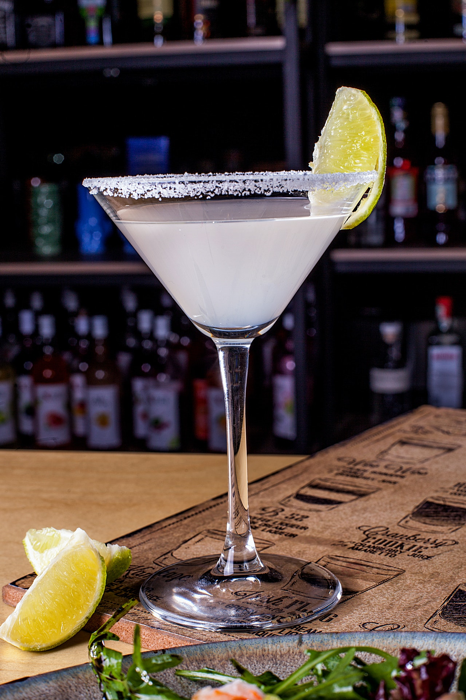

Margarita
마르가리타
#신나는 파티 #힙합 #새콤한 #강한 탄산 #높은 도수

Ingredients
- 소금 2g
- 얼음 100g
- 직접 착즙한 라임 주스 15ml
- 트리플 섹 20ml
- 아가베 100% 데킬라 50ml
Recipe
- 잔의 림 부분의 절반을 소금으로 리밍해줍니다. 원한다면 생략할 수 있습니다.
- 셰이커에 라임 주스, 트리플 섹, 데킬라와 얼음을 모두 넣고 잘 흔들어줍니다.
- 얼음을 걸러내 차갑게 식힌 칵테일 글라스에 따라줍니다.
History
마르가리타 칵테일의 정확한 기원은 명확하지 않으나, 여러 이야기가 전해집니다.
칵테일 역사학자 데이비드 원드리치는 마르가리타가 브랜디 데이지(마르가리타는 스페인어로 "데이지"를 의미)에서 유래되었으며, 브랜디 대신 테킬라를 사용한 것이라고 주장하고 있습니다.
1936년 아이오와 주 신문 편집자 제임스 그레이엄이 티후아나에서 이와 유사한 칵테일을 발견했다는 기록도 있으며, 1937년 영국에서 출판된 ''카페 로열 칵테일 북''에는 마르가리타와 동일한 비율의 테킬라, 트리플 섹, 라임 주스를 사용하는 피카도르 레시피가 포함되어 있습니다.
1953년 12월 에스콰이어에서는 마르가리타를 "이 달의 술"로 소개하며, 테킬라 1온스, 소량의 트리플 섹, 라임 또는 레몬 1/2개로 만든 즙을 사용하고, 잘게 부순 얼음 위에 붓고 잘 저은 후, 글라스 가장자리를 레몬이나 라임 껍질로 문지르고 소금을 둘러 마시는 레시피를 제시했습니다.
최초의 얼린 마르가리타 머신은 1971년 댈러스에서 화학자 존 호건(John Hogan영어)이 마리아노스라는 레스토랑에서 발명했으며 순수한 사탕수수를 쓴 것이 인기 비결이었다고 합니다.